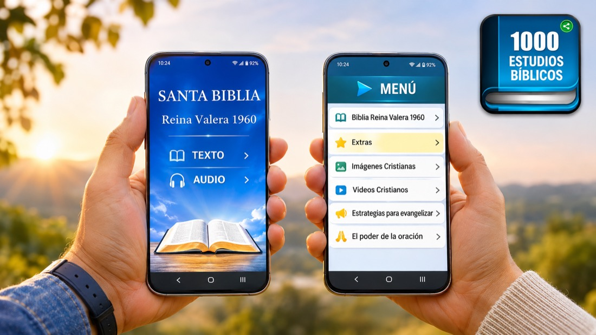
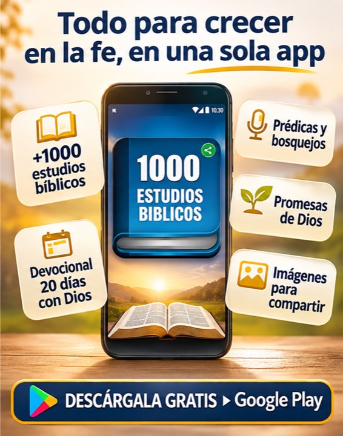

1000 Estudios BíblicosApp cristiana gratuita para Android
Acércate más a Dios cada día con la Biblia en tu celular
Lee la Biblia Reina Valera 1960 aun sin internet, escúchala en audio y crece con más de 1000 estudios bíblicos.
DESCARGAR GRATISDisponible en Google PlaySin registro · Sin pagos


- 📖La Biblia sin internetReina Valera 1960 completa para leer en cualquier lugar.
- 📚Más de 1000 estudios bíblicosPara entender la Palabra en un lenguaje simple y claro.
- 🎧La Biblia en audioEscúchala mientras viajas o trabajas (con conexión).
- 📅Devocional «20 días con Dios»Un plan de oración día por día.
★★★★★
Estoy aprendiendo a conocer más de Dios. Gracias por esta aplicación.Reseña en Google Play
Y mucho más, gratis
- 🎤Prédicas, bosquejos e ilustracionesRecursos para pastores, líderes y jóvenes.
- 🌱Promesas de Dios por temaPara cada momento de tu vida.
- 🖼️Miles de imágenes cristianasPara compartir en WhatsApp y Facebook.
★★★★★
La app mejor detallada y completa de educación y predicación del mensaje del Señor.Reseña en Google Play